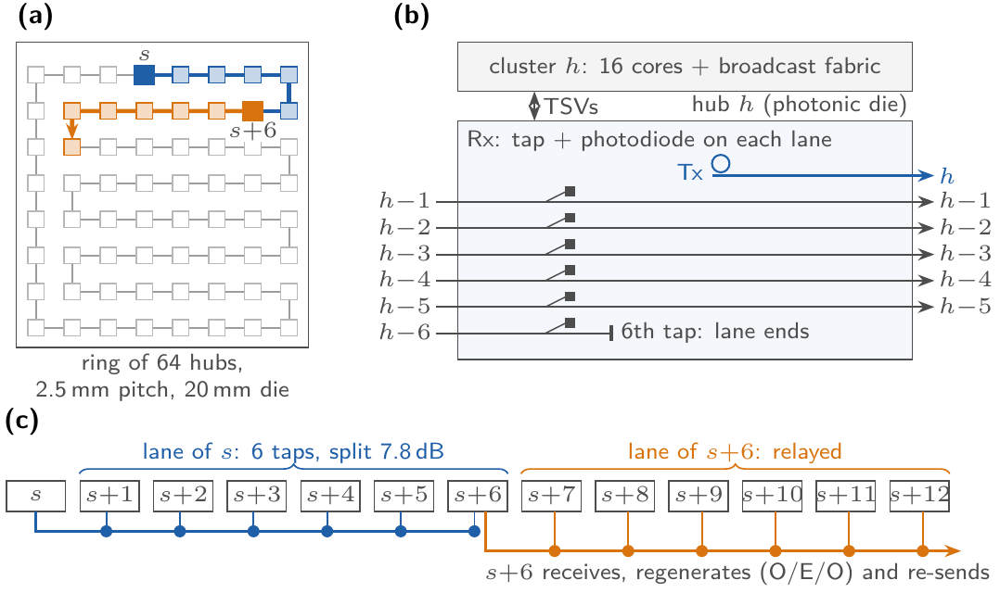

Simulator and reproduction artefact. Every table, figure and number in the paper is generated from this repository.
A ring of cores joined by a multiple-writer multiple-reader optical network-on-chip. Each waveguide carries a number of wavelength channels; one transmission occupies a wavelength slot and can be received by any number of cores that tap the waveguide. On that ring the simulator runs one mini-batch training iteration of a fully connected network and answers two questions.
Section 6.8 of the paper rebuilds the network on a physically constrained organisation modelled on Hummingbird, a fabricated optical-broadcast processor: cluster hubs on a crossing-free ring, single-writer lanes tapped by the next six clusters, and a relay at every sixth cluster. Every transmission then stays within an 8 dB power split and closes its link budget at 40 Gb/s.

git clone https://github.com/TravisDai/onoc-fcnn-allocation.git
cd onoc-fcnn-allocation
pip install -r requirements.txt
python -m pytest -q # 23 tests, about 3 minutes
python physhb.py # physical-layer numbers of Section 3.6, instant
python make_tables.py # rebuild every table, figure and macro from results/The result CSVs are in the repository, so make_tables.py
rebuilds the paper's tables and figures without re-running a single experiment. Re-run the
experiments only if you want to regenerate the data itself.
Python 3.11 with numpy, pandas, matplotlib, numba and pytest. No GPU, no optical hardware and no network access. Everything runs on one machine.
Times are for two cores of an Intel Core i5 3200 host with 32 GB of memory. Each run writes its
log next to its CSV in results/.
| Command | Produces | Time |
|---|---|---|
python -m pytest -q | Correctness of everything below | 3 min |
python experiments.py main | results/main.csv: six networks, four batch sizes, both collectives, both wavelength counts, three mapping families, four allocation methods | 30 min |
python experiments.py enoc | results/enoc.csv: the electrical-mesh reference of Section 6.7 | 5 min |
python experiments.py sens | results/sens.csv: sensitivity to reconfiguration time, bit rate, core throughput, flit serialisation | 5 min |
python ring_size.py | results/ringsize.csv: rings of 64, 256 and 1,000 cores | 5 min |
python experiments.py dp | results/dp.csv: exact optima the coordinate search is measured against | 2-3 h |
./run_hb.sh | results/hb_*.csv: the Hummingbird-style network, and the lane-count, lane-rate and cluster-count studies | 12 min |
python make_tables.py | paper/generated/*.tex and paper/figs/fig_*.pdf | 20 s |
run_all.sh runs the first five in order. To rebuild the manuscript afterwards:
cd paper
pdflatex FGCS_2026 && bibtex FGCS_2026 && pdflatex FGCS_2026 && pdflatex FGCS_2026Tables are written to paper/generated/tab_*.tex and included directly. Every number
quoted in the running text is a LaTeX macro in paper/generated/results_macros.tex, so a
sentence such as "T is 1.3-5.2x faster than R" is written in the source as macros and cannot drift
from the data. Nothing is typed by hand.
| Paper | Code |
|---|---|
| Per-neuron FLOPs of R and T | onocsim.flops_per_neuron |
| Emitters, payloads and the slot service model | onocsim.transition |
| Network energy; SRAM by liveness; iteration time | onocsim.transition, sram_peak, evaluate |
| Loss of one transmission and the link budget | physhb.il_db, budget_db, f_max |
| Relaxed initialiser and the scaling corollary | onocsim.relaxed_init |
| Exact chain dynamic program | onocsim.pair_matrix, chain_dp |
| Mapping-family metrics | onocsim.schedule_metrics |
| Electrical mesh bound | refmodel.mesh_transition, mesh_eval |
| Transition with relays (Section 6.8) | hbsim.htransition |
refmodel.py and hbref.py
implement the same equations with plain Python dictionaries and share no code with the numba
simulators. The tests check agreement on hundreds of random cases, including energy, SRAM and
schedule metrics.The main results are trace-driven. traces/compute_traces.csv holds per-core forward
and backward kernel times measured on a C implementation with GSL and BLAS, for every network,
period, batch size and core count, 100 to 300 repetitions each, compressed from 5.4 GB of logs.
Forward kernel times are used unchanged; because the profiled backward kernel forms the weight
gradient, the extra products of R and T are charged at the efficiency measured at the same
per-core load. The sensitivity study replaces the traces by an analytical model over a sixteenfold
range of core throughput and reaches the same conclusions.
D_cfg, the microring reconfiguration time per slot, is the least certain
parameter: the base value is 10 ns and the paper sweeps it from 1 ns to 1 µs.